|
 |
| ДУПИКСЕНТ® (DUPIXENT) dupilumab раствор д/п/к введения | ||||||||||||||||||||||||||||||||||||||||||||||||||||||||||||||||||||||||||||||||||||||||||||||||||
|
Клинико-фармакологическая группа: Ингибитор интерлейкина Номер и дата регистрации: ЛП-005440 от 04.04.19 Код ATX: D11AH05 |
Владелец регистрационного удостоверения: зарегистрировано Представительство: | |||||||||||||||||||||||||||||||||||||||||||||||||||||||||||||||||||||||||||||||||||||||||||||||||
Форма выпуска, состав и упаковка Раствор для п/к введения прозрачный или слегка опалесцирующий, бесцветный или желтоватого цвета.
Вспомогательные вещества: L-гистидин и L-гистидина гидрохлорида моногидрат - 3.1 мгc, L-аргинина гидрохлорид - 4.35 мгd, натрия ацетата тригидрат и уксусная кислота ледяная - 0.75 мгf, сахароза - 50 мгg, полисорбат 80 - 2 мгh, вода д/и - до 1 мл. 2 мл - шприцы одноразовые (1) - пачки картонные с заклеенными клапанами×. Раствор для п/к введения прозрачный или слегка опалесцирующий, бесцветный или желтоватого цвета.
Вспомогательные вещества: L-гистидин и L-гистидина гидрохлорида моногидрат - 3.1 мгc, L-аргинина гидрохлорид - 10.51 мгe, натрия ацетата тригидрат и уксусная кислота ледяная - 0.75 мгf, сахароза - 49.88 мгg, полисорбат 80 - 2 мгh, вода д/и - до 1 мл. 1.14 мл - шприцы одноразовые с системой защиты из прозрачного стекла (тип I) (1) - пачки картонные с заклеенными клапанами×. × На каждую пачку картонную нанесен антиконтрафактный стикер. a В расчете на 2 мл препарата. | ||||||||||||||||||||||||||||||||||||||||||||||||||||||||||||||||||||||||||||||||||||||||||||||||||
| ||||||||||||||||||||||||||||||||||||||||||||||||||||||||||||||||||||||||||||||||||||||||||||||||||
Описание препарата основано на официально утвержденной инструкции по применению и утверждено компанией-производителем для издания 2022 г. | ||||||||||||||||||||||||||||||||||||||||||||||||||||||||||||||||||||||||||||||||||||||||||||||||||
Фармакологическое действие |
Фармакокинетика |
Показания |
Режим дозирования |
Побочное действие |
Противопоказания |
Беременность и лактация |
Особые указания |
Передозировка |
Лекарственное взаимодействие |
Условия хранения и сроки годности |
Условия реализации
Фармакологическое действие
Механизм действия Препарат Дупиксент® является рекомбинантным человеческим моноклональным антителом (IgG4), которое блокирует передачу сигналов интерлейкина-4 (ИЛ-4) и интерлейкина-13 (ИЛ-13) путем специфического связывания с IL-4Rα-субъединицей, общей для рецепторных комплексов ИЛ-4 и ИЛ-13. Препарат Дупиксент® блокирует передачу сигналов ИЛ-4 через рецепторы I типа (IL-4Rα/γc) и общую передачу сигналов ИЛ-4 и ИЛ-13 через рецепторы II типа (IL-4Rα/IL-13Rα). ИЛ-4 и ИЛ-13 являются ключевыми цитокинами воспаления 2 типа (в т.ч. продуцируемые и Th2-лимфоцитами), вовлеченными в патогенез атопических заболеваний. Воспаление 2 типа играет важную роль в патогенезе многих атопических заболеваний, включая бронхиальную астму, способствует ограничению воздушного потока и увеличивает риск обострений. ИЛ-4 и ИЛ-13 выступают в качестве основных факторов воспаления 2 типа, активируя множественные типы клеток (например, тучные клетки, лимфоциты, эозинофилы, нейтрофилы, макрофаги) и индуцируя множественные медиаторы (например, иммуноглобулин Е, гистамин, эйкозаноиды, лейкотриены, хемокины и цитокины, включая эотаксин/CCL11, TARC/CCL17 и ИЛ-5), участвующие в воспалении 2 типа. Блокирование пути передачи сигналов ИЛ-4/ИЛ-13 дупилумабом у пациентов снижает концентрации многих из этих маркеров воспаления 2 типа, включая иммуноглобулин Е, периостин и множественные провоспалительные цитокины и хемокины (например, эотаксин, TARC), а также снижает уровень фракции оксида азота в выдыхаемом воздухе (FeNO) - маркер воспаления в легких. Было показано, что блокирование пути передачи сигналов ИЛ-4/ИЛ-13 дупилумабом в гуманизированных моделях животных предотвращает последующие действия этих цитокинов и хемокинов, в т.ч. гиперплазию бокаловидных клеток, гиперреактивность гладкомышечных клеток дыхательных путей, эозинофильное воспаление в легких, другие воспалительные процессы в легких, а также предотвращает нарушение функции легких; при этом снижение выраженности эозинофильного воспаления в легких происходит независимо от нормального или повышенного уровня эозинофилов в крови. Дупилумаб производится с помощью технологии рекомбинантной ДНК в суспензионной культуре клеток яичника китайского хомячка. Дупилумаб имеет молекулярную массу приблизительно 147 кДа. Фармакодинамика Атопический дерматит В клинических исследованиях лечение препаратом Дупиксент® приводило к снижению в сыворотке крови концентраций биомаркеров, связанных с цитокинами воспаления 2 типа, таких как тимус-ассоциированного регуляторного хемокина (TARC/CCL17), общего сывороточного иммуноглобулина Е и аллерген-специфического иммуноглобулина Е. Также наблюдалось снижение активности ЛДГ, биомаркера, связанного со степенью тяжести атопического дерматита и его активностью. Препарат Дупиксент® уже в начале 2-й недели лечения вызывал супрессию хемокина TARC по сравнению с плацебо, с тенденцией продолжения его снижения до максимальной и устойчивой супрессии к 12-й неделе лечения. У пациентов, получавших препарат Дупиксент® в дозе 300 мг 1 раз в 2 недели и в дозе 300 мг 1 раз в неделю, общий сывороточный иммуноглобулин Е к 52-й неделе терапии снизился на -74.8% и -73.9% (медиана изменения по сравнению с исходным уровнем), соответственно, по сравнению с -0% в группе плацебо. Аналогичные тенденции наблюдались в отношении антиген-специфических иммуноглобулинов Е, в т.ч. энтеротоксина А, специфического для золотистого стафилококка (S. aureus), аллергенов трав и деревьев. Бронхиальная астма В соответствии с ингибированием передачи сигналов ИЛ-4 и ИЛ-13, лечение дупилумабом заметно уменьшало уровень FeNO и концентрации эотаксина-3, общего иммуноглобулина Е, аллерген-специфического иммуноглобулина Е, TARC и периостина у пациентов с бронхиальной астмой по сравнению с плацебо. Эти снижения уровней биомаркеров воспаления были сопоставимы для режимов дозирования 200 мг 1 раз в 2 недели и 300 мг 1 раз в 2 недели и были близки к максимальному подавлению через 2 недели лечения, за исключением иммуноглобулина Е, который уменьшался медленнее. Описанные эффекты были устойчивыми во время лечения. Хронический полипозный риносинусит У участников исследований с хроническим полипозным риносинуситом (ХПРС) на фоне лечения дупилумабом также наблюдалось снижение в моче уровня лейкотриена 4 (LTE4), маркера, связанного с активацией тучных клеток, базофилов и эозинофилов. Клиническая эффективность Атопический дерматит Эффективность и безопасность препарата Дупиксент® в монотерапии или в сочетании с топическими ГКС оценивали в трех основных рандомизированных, двойных слепых, плацебо-контролируемых исследованиях (SOLO1, SOLO2 и CHRONOS) с участием 2119 пациентов в возрасте 18 лет и старше со среднетяжелым и тяжелым течением атопического дерматита. 16-недельные исследования монотерапии (SOLO1 и SOLO2) Показателя общей оценки исследователя (IGA) 0 или 1 ("чистая" или "почти чистая кожа") к 16-й неделе лечения в клиническом исследовании SOLO1 достигли 37.9% пациентов, получавших Дупиксент® в дозе 300 мг 1 раз в 2 недели, и 37.2% пациентов, получавших Дупиксент® в дозе 300 мг 1 раз в неделю, против 10.3% пациентов в группе плацебо, а в исследовании SOLO2 - 36.1% и 36.4% против 8.5% пациентов соответственно. Улучшение не менее чем на 75% от исходного значения по индексу тяжести и площади экземы (EASI-75) к 16-й неделе лечения в исследовании SOLO1 достигли 51.3% пациентов, получавших Дупиксент® в дозе 300 мг 1 раз в 2 недели, и 52.5% пациентов, получавших Дупиксент® в дозе 300 мг 1 раз в неделю, против 14.7% пациентов в группе плацебо, а в исследовании SOLO2 - 44.2% и 48.1% против 11.9% соответственно. Не менее чем 4-бального уменьшения зуда по пиковым значениям числовой шкалы оценки выраженности зуда NRS к 16-й неделе лечения в исследовании SOLO1 достигли 40.8% пациентов, получавших Дупиксент® в дозе 300 мг 1 раз в 2 недели, и 40.3% пациентов, получавших Дупиксент® в дозе 300 мг 1 раз в неделю, против 12.3% пациентов в группе плацебо, а в исследовании SOLO2 - 36.0% и 39.0% пациентов против 9.5% соответственно. Значительно больший процент пациентов, получавших Дупиксент®, достигал быстрого улучшения по шкале оценки тяжести зуда NRS по сравнению с пациентами в группе плацебо (определяемого как ≥4-балльное улучшение уже на 2-й неделе), причем процент пациентов, у которых наблюдалось уменьшение тяжести зуда по шкале NRS, продолжал увеличиваться в течение всего периода лечения. Эффекты лечения в подгруппах (с распределением на подгруппы по массе тела, возрасту, полу, расе и сопутствующей терапии, в т.ч. с применением иммунодепрессантов) в исследованиях SOLO1 и SOLO2 в целом согласуются с результатами, полученными в общей исследуемой популяции. 52-недельное клиническое исследование с одновременным применением топических ГКС (CHRONOS) IGA 0 или 1 к 16-й неделе лечения достигли 38.7% пациентов, получавших Дупиксент® в дозе 300 мг 1 раз в 2 недели + топические ГКС, и 39.2% пациентов, получавших Дупиксент® в дозе 300 мг 1 раз в неделю + топические ГКС, против 12.4% пациентов в группе плацебо, а к 52-й неделе - 36.0% и 40.0% против 12.5% пациентов соответственно. EASI-75 к 16-й неделе лечения достигли 68.9% пациентов, получавших Дупиксент® в дозе 300 мг 1 раз в 2 недели + топические ГКС, и 63.9% пациентов, получавших Дупиксент® в дозе 300 мг 1 раз в неделю + топические ГКС, против 23.2% пациентов в группе плацебо + топические ГКС, а к 52-й неделе - 65.2% и 64.1% против 21.6% пациентов соответственно. Не менее чем 4-бального улучшения по шкале тяжести зуда NRS к 16-й неделе лечения достигли 58.8% пациентов, получавших Дупиксент® в дозе 300 мг 1 раз в 2 недели + топические ГКС, и 50.8% пациентов, получавших препарат Дупиксент® в дозе 300 мг 1 раз в неделю + топические ГКС, против 19.7% пациентов в группе плацебо + топические ГКС, а к 52-й неделе - 51.2% и 39.0% против 12.9% пациентов соответственно. Более значительный процент пациентов, получавших препарат Дупиксент® + топические ГКС, достигал быстрого улучшения по шкале тяжести зуда NRS по сравнению с пациентами в группе плацебо + топические ГКС (определяемого как > 4-балльное улучшение уже на 2-й неделе; р <0.05), причем доля пациентов, у которых наблюдалось уменьшение тяжести зуда по шкале NRS, продолжала увеличиваться в течение всего периода лечения. Эффекты лечения в подгруппах (с распределением по массе тела, возрасту, полу, расе и сопутствующей терапии, в т.ч. с применением иммунодепрессантов) в исследовании CHRONOS в целом согласуются с результатами, полученными в общей исследуемой популяции. Клиническая эффективность у пациентов, которым не рекомендовалось лечение циклоспорином У пациентов, которым не рекомендовалось лечение циклоспорином или оно было неэффективно, монотерапия препаратом Дупиксент® в обеих группах лечения, приводила к значительному улучшению признаков и симптомов атопического дерматита по сравнению с плацебо. Больший процент пациентов, получавших Дупиксент®, по сравнению с группой плацебо достигал IGA 0 или 1 и снижения по сравнению с исходным значением на ≥2 балла к 16-й неделе (29.5% против 6.8%), EASI-75 к 16-й неделе (38% против 11.4%), а также снижения не менее чем на 4 балла индекса тяжести зуда от исходного значения к 16-й неделе (34.9% по сравнению с 8%) (р <0.001 для всех 3 конечных точек). Аналогичные результаты наблюдались у пациентов, получавших Дупиксент® одновременно с топическими ГКС. Эффективность комбинации препарата Дупиксент® + топические ГКС сохранялась до 52-й недели терапии. Подростки в возрасте от 12 до 17 лет Эффективность и безопасность применения препарата Дупиксент® в монотерапии у пациентов оценивалась в мультицентровом, рандомизированном, двойном-слепом, плацебо-контролируемом исследовании (AD-1536) с участием 251 пациента в возрасте от 12 до 17 лет с атопическим дерматитом среднетяжелого и тяжелого течения. Соответствующие пациенты, включенные в данное исследование, продемонстрировали неадекватный ответ на предварительную терапию топическими препаратами. Пациенты получали: начальную дозу 400 мг препарата Дупиксент® (2 инъекции по 200 мг) с последующим введением 200 мг каждые 2 недели для пациентов с базовой массой тела менее 60 кг или начальную дозу препарата Дупиксент® 600 мг (2 инъекции по 300 мг) с последующим введением 300 мг каждые 2 недели для пациентов с базовой массой тела более 60 кг; либо начальную дозу препарата Дупиксент® 600 мг (2 инъекции по 300 мг) с последующим введением 300 мг каждые 4 недели независимо от массы тела; либо плацебо. Дупиксент® вводят п/к. При необходимости контролировать недопустимые симптомы пациентам разрешалось получать скоропомощное лечение по решению исследователя. Пациенты, которые получали такое лечение, были оценены как не отвечающие на терапию препаратом Дупиксент®. В данном исследовании средний возраст пациентов составлял 14.5 лет, средний вес 59.4 кг, 41.0% пациентов были женщины, 62.5% белокожие, 15.1% азиаты и 12.0% темнокожие. В целом, 92.0% пациентов имели как минимум одно коморбидное аллергическое состояние; у 65.5% пациентов наблюдался аллергический ринит; у 53.6% пациентов была бронхиальная астма и у 68% пациентов наблюдалась пищевая аллергия. Клинический ответ Показателя общей оценки исследователя (IGA) 0 или 1 ("чистая" или "почти чистая кожа") к 16-й неделе лечения в исследовании AD-1526 достигли 24.4% пациентов, получавших Дупиксент® в дозе 300 мг 1 раз в 2 недели (≥ 60 кг) или 200 мг 1 раз в 2 недели (< 60 кг) против 2.4% пациентов в группе плацебо. Улучшение не менее чем на 75% от исходного значения по индексу тяжести и площади экземы (EASI-75) к 16-й неделе достигли 41.5% пациентов, получавших Дупиксент® против 8.2% пациентов в группе плацебо. Не менее чем 4-бального уменьшения зуда по пиковым значениям числовой шкалы оценки выраженности зуда (NRS) к 16-й неделе лечения в исследовании достигли 36,6 % пациентов, получавших Дупиксент®, против 4.8% пациентов в группе плацебо. Значительно больший процент пациентов, получавших Дупиксент®, достигал быстрого улучшения по шкале оценки тяжести зуда NRS по сравнению с пациентами в группе плацебо (определяемого как ≥ 4-балльное улучшение уже на 2-й неделе), причем процент пациентов, у которых наблюдалось уменьшение тяжести зуда по шкале NRS, продолжал увеличиваться в течение всего периода лечения. Значительно большее соотношение пациентов, рандомизированных на терапию препаратом Дупиксент®, достигли быстрого улучшения по шкале оценки выраженности зуда (NRS) по сравнению с плацебо (улучшение более чем в 4 раза уже на 4-й неделе; номинальное значение p <0.001) и доля пациентов, ответивших на терапию по шкале NRS, наблюдалась в сочетании с улучшением объективных признаков атопического дерматита. Долгосрочные исследования эффективности терапии препаратом Дупиксент® у пациентов подросткового возраста с атопическим дерматитом среднетяжелого и тяжелого течения, которые принимали участие в предыдущих клинических исследованиях препарата Дупиксент®, были оценены в открытом продолженном исследовании (AD-1434). Данные в отношении эффективности, полученные в данном исследовании, предполагают, что клиническое преимущество, полученное на 16-й неделе терапии, является стабильным в течение 52 недель терапии. Дети в возрасте от 6 до 11 лет Эффективность и безопасность применения препарата Дупиксент® у пациентов детского возраста в сочетании с топическими ГКС изучалась в многоцентровом рандомизированном двойном слепом плацебо-контролируемом исследовании (AD-1652) с участием 367 пациентов в возрасте от 6 до 11 лет с атопическим дерматитом, характеризующимся значениями IGA ≥4 (по шкале от 0 до 4), EASI ≥21 (по шкале от 0 до 72), а также минимальной пораженной площади поверхности тела ≥15%. У подходящих пациентов, включенных в это исследование, ранее наблюдался недостаточный ответ на топические препараты. Пациентов стратифицировали в зависимости от массы тела на исходном уровне (<30 кг, ≥30 кг). Пациенты в группе, получавшей препарат Дупиксент® 1 раз в 2 недели + топические ГКС с исходной массой тела <30 кг получали начальную дозу препарата 200 мг/сут и затем по 100 мг 1 раз в 2 недели со 2 по 14 неделю, а пациенты с исходной массой тела ≥30 кг получали первоначальную дозу препарата Дупиксент® 400 мг/сут и затем 200 мг 1 раз в 2 недели со 2 по 14 неделю. Пациенты в группе, получавшей препарат Дупиксент® 1 раз в 4 недели + топические ГКС получали первоначальную дозу препарата 600 мг/сут и затем 300 мг 1 раз в 4 недели с 4 по 12 неделю, независимо от массы тела. Пациентам было разрешено получать резервную терапию по усмотрению исследователя. Пациенты, получавшие резервную терапию, расценивались как не отвечающие на терапию препаратом Дупиксент®. В данном исследовании средний возраст составлял 8.5 лет, средняя масса тела 29.8 кг, 50.1% пациентов были женского пола, 69.2% были белыми, 16.9% были темнокожими и 7.6% были азиатами. В целом, 91.7% пациентов имели как минимум одно коморбидное аллергическое состояние; у 64.4% наблюдалась пищевая аллергия, у 62.7% – другие виды аллергии, у 60.2% наблюдался аллергический ринит, у 46.7% пациентов наблюдалась бронхиальная астма. Клинический ответ Показателя общей оценки исследователя (IGA) 0 или 1 ("чистая" или "почти чистая кожа") к 16-й неделе лечения в исследовании AD-1652 достигли 29.5% пациентов c массой тела менее 30 кг, получавших Дупиксент® в дозе 300 мг 1 раз в 4 недели, против 13.1% в группе плацебо; 39.0% пациентов с массой тела 30 и более кг, получавших Дупиксент® в дозе 200 мг 1 раз в 2 недели, против 9.7% в группе плацебо. Улучшение не менее чем на 75% от исходного значения по индексу тяжести и площади экземы (EASI-75) к 16-й неделе лечения в исследовании AD-1652 достигли 75.4% пациентов c массой тела менее 30 кг, получавших Дупиксент® в дозе 300 мг 1 раз в 4 недели, против 27.9% в группе плацебо; 74.6% пациентов с массой тела 30 и более кг, получавших Дупиксент® в дозе 200 мг 1 раз в 2 недели, против 25.8% в группе плацебо. Не менее чем 4-бального уменьшения зуда по пиковым значениям числовой шкалы оценки выраженности зуда (NRS) к 16-й неделе лечения в исследовании AD-1652 достигли 54.1% пациентов c массой тела менее 30 кг, получавших Дупиксент® в дозе 300 мг 1 раз в 4 недели, против 11.7% в группе плацебо; 61.4% пациентов с массой тела 30 и более кг, получавших Дупиксент® в дозе 200 мг 1 раз в 2 недели, против 12.9% в группе плацебо. Значительно больший процент пациентов, получавших Дупиксент®, достигал быстрого улучшения по шкале оценки тяжести зуда NRS по сравнению с пациентами в группе плацебо (определяемого как ≥ 4-балльное улучшение уже на 2-й неделе), причем процент пациентов, у которых наблюдалось уменьшение тяжести зуда по шкале NRS, продолжал увеличиваться в течение всего периода лечения. Значительно больший процент пациентов, рандомизированных на терапию препаратом Дупиксент® в сочетании с топическими ГКС, достиг быстрого улучшения по шкале оценки выраженности зуда (NRS) по сравнению с плацебо (улучшение ≥4 балла на 4-й неделе). Долгосрочная эффективность терапии препаратом Дупиксент® в сочетании с топическими ГКС у пациентов детского возраста с атопическим дерматитом, которые принимали участие в предшествующих клинических исследованиях препарата Дупиксент® в сочетании с топическими ГКС изучалась в продолженном открытом исследовании (AD-1434). Данные по эффективности из этого исследования позволяют предположить, что клиническое улучшение, наблюдавшееся на 16 неделе, сохранялось в течение 52 недель терапии включительно. Бронхиальная астма Было проведено три рандомизированных, двойных слепых, плацебо-контролируемых, многоцентровых исследования в параллельных группах (DRI12544, QUEST и VENTURE) продолжительностью от 24 до 52 недель с участием 2888 пациентов (в возрасте 12 лет и старше). Во все три исследования пациенты были включены независимо от минимального исходного уровня эозинофилов или другого биомаркера воспаления 2 типа (например, уровня FeNO или иммуноглобулина Е). Обострения бронхиальной астмы В исследованиях DRI12544, QUEST и VENTURE оценивали частоту тяжелых обострений астмы независимо от минимального количества эозинофилов или любых других биомаркеров воспаления 2 типа (например, FeNO или иммуноглобулин Е) в начале исследования. В общей популяции, независимо от содержания эозинофилов и других биомаркеров воспаления 2 типа, у пациентов, получавших 200 или 300 мг препарата Дупиксент® 1 раз в 2 недели, произошло значительное снижение частоты тяжелых обострений астмы по сравнению с группой плацебо. В исследованиях DRI12544 и QUEST частота тяжелых обострений при применении препарата Дупиксент® в дозе 200 мг 1 раз в 2 недели снижалась на 70% и 48%; а при применении в дозе 300 мг 1 раз в 2 недели - на 70% и 46% соответственно; и на 59% в исследовании VENTURE. В объединенном анализе исследований DRI12544 и QUEST частота тяжелых обострений, приводящих к госпитализации и/или посещениям отделений неотложной помощи, снизилась на 25.5% и 46.9% при применении препарата Дупиксент® в дозах 200 мг или 300 мг 1 раз в 2 недели соответственно. Кумулятивное среднее число тяжелых обострений было более низкое у пациентов, получавших препарат Дупиксент® по сравнению с плацебо в исследованиях DRI12544, QUEST и VENTURE (в общей популяции и в популяции с исходным числом эозинофилов ≥150 клеток/мкл или FeNO ≥25 ppb) в течение 24- или 52-недельного периода лечения в обеих группах режимов дозирования препарата. В исследовании QUEST у пациентов, получавших ингаляционные ГКС в средней дозе, наблюдалось сходное снижение частоты тяжелых обострений астмы по сравнению с пациентами, получавшими ингаляционные ГКС в высокой дозе. Функция легких Клинически значимое увеличение предбронходилатационного значения объема форсированного выдоха за 1-ю секунду (ОФВ1) наблюдалось на 12-й неделе в общей популяции независимо от уровня эозинофилов или других биомаркеров воспаления 2 типа (например, FeNO или иммуноглобулин Е). В исследованиях DRI12544, QUEST и VENTURE, по сравнению с плацебо, большее улучшение ОФВ1 наблюдалось также у пациентов с FeNO ≥25 ppb. Улучшение ОФВ1 было одинаковым, независимо от того, получали ли пациенты ингаляционные ГКС в средней дозе, ингаляционные ГКС в высокой дозе или пероральные ГКС. Значительные улучшения ОФВ1 наблюдались уже в течение второй недели (DRI12544, QUEST и VENTURE) после первой инъекции препарата Дупиксент® в дозе как 200 мг, так и 300 мг и сохранялись в течение 24 недель (DRI12544 и VENTURE) и 52 недель (QUEST). Скорректированная средняя разность абсолютных значений ОФВ1 была 0.20 л и 0.14 л в группах, получавших Дупиксент® 200 мг 1 раз в 2 недели, по сравнению с плацебо; 0.16 и 0.13 л в группах, получавших 300 мг 1 раз в 2 недели по сравнению с плацебо, соответственно в исследованиях DRI12544 и QUEST. Соответствующее процентное изменение ОФВ1 составляло от 9.2 до 11.9% для дозы 200 мг 1 раз в 2 недели и от 9.4 до 11.7% для дозы 300 мг 1 раз в 2 недели. Скорректированная средняя разность абсолютных значений пре-бронходилатационного ОФВ1 от исходного уровня к 24-й неделе (достаточное время для достижения максимального снижения дозы пероральных ГКС) в исследовании VENTURE составила 0.22 л в группе применения препарата Дупиксент® по сравнению с плацебо, что соответствовало улучшению на 15.1% по сравнению с исходным уровнем. Кроме того, у пациентов, получавших препарат Дупиксент®, значительно улучшился постбронходилатационный показатель ОФВ1 по сравнению с исходным уровнем на 12-й и 52-й неделях по сравнению с плацебо, что указывает на то, что препарат Дупиксент® улучшает фиксированную обструкцию дыхательных путей. В группе применения препарата Дупиксент® в течение года наблюдения не было зарегистрировано снижения функции легких с учетом значения постбронходилатационного значения ОФВ1. Снижение дозы пероральных ГКС В исследовании VENTURE оценивалось влияние препарата Дупиксент® на снижение применения поддерживающих пероральных ГКС. Исходная средняя доза пероральных кортикостероидов составляла 11.75 мг в группе плацебо и 10.75 мг в группе, получавшей препарат Дупиксент®. По сравнению с плацебо, у пациентов, получавших Дупиксент®, отмечалось большее снижение ежедневной дозы пероральных ГКС при сохранении контроля над астмой. Среднее общее снижение ежедневной дозы пероральных ГКС при сохранении контроля над астмой составляло 70.1% по сравнению с исходным уровнем у пациентов, получавших Дупиксент® и 41.9% в группе плацебо. Исходы, сообщаемые пациентами Кроме того, во всех 3 исследованиях Дупиксент® обеспечил клинически значимое улучшение показателей контроля бронхиальной астмы в общей популяции по сравнению с группой плацебо, о чем свидетельствуют показатели ACQ-5 и соответствующее улучшение качества жизни, измеренное по шкале AQLQ(S). Улучшение показателей ACQ-5 и AQLQ(S) были зарегистрированы уже через 2 недели, и это улучшение сохранялось на протяжении 24 недель в исследовании DRI12544 и 52 недель в исследовании QUEST. В общей популяции исследования QUEST доля пациентов, ответивших на лечение, что выражалось в достижении минимального клинически значимого различия показателей ACQ-5 и AQLQ(S), была существенно выше к 52-й неделе в группе, получавшей обе дозы препарата Дупиксент®. Долгосрочное продленное исследование (TRAVERSE) Долгосрочную эффективность препарата Дупиксент® у 2282 взрослых и подростков со среднетяжелой и тяжелой бронхиальной астмой, и у взрослых пациентов с гормонозависимой астмой, которые принимали участие в предыдущих клинических исследованиях препарата Дупиксент®, оценивали в рамках открытого продленного исследования (TRAVERSE). В данном исследовании препарата Дупиксент® улучшение клинических показателей, в т.ч. снижение количества обострений и улучшение функции легких, сохранялось в течение 96 недель. У пациентов с гормонозависимой астмой, несмотря на продолжающееся снижение или отмену пероральных ГКС, отмечалось снижение количества обострений и устойчивое улучшение функции легких в течение 96 недель. Частота тяжелых обострений в течение 96 недель составила 0.3 и 0.27; а улучшение ОФВ1 от исходного значения - 0.33 л (21.1%) и 0.42 л (27.3%) у пациентов с уровнем эозинофилов в крови ≥150 клеток/мкл и ≥300 клеток/мкл соответственно. Аналогичное сохранение эффекта наблюдалось и по параметрам ACQ-5 и AQLQ(S). Аналогичные результаты отмечались и в подгруппе пациентов, получавших высокие дозы ингаляционных кортикостероидов. Хронический полипозный риносинусит Программа клинических исследований применения препарата при ХПРС включала два рандомизированных двойных слепых многоцентровых плацебо-контролируемых исследования в параллельных группах (SINUS-24 и SINUS-52) с участием 724 пациентов в возрасте 18 лет и старше, получающих базисную терапию интраназальными кортикостероидами. Эти исследования включали пациентов с тяжелым течением ХПРС, несмотря на ранее проведенное хирургическое вмешательство на придаточных пазухах носа или лечение системными кортикостероидами на протяжении последних 2 лет. В ходе исследования было разрешено лечение системными кортикостероидами или хирургическое вмешательство по решению исследователя. В исследовании SINUS-24 в общей сложности 276 пациентов были рандомизированы либо в группу Дупиксент® 300 мг (n=143), либо в группу плацебо (n=133), инъекции осуществляли 1 раз в 2 недели на протяжении 24 недель. В исследовании SINUS-52 в общей сложности 448 пациентов были рандомизированы либо в группу препарата Дупиксент® 300 мг 1 раз в 2 недели на протяжении 52 недель (n=150), либо в группу препарата Дупиксент® 300 мг 1 раз в 2 недели на протяжении 24 недель, а затем 300 мг 1 раз в 4 недели до недели 52 (n=145), либо в группу плацебо (n=153). При компьютерной томографии у всех пациентов было выявлено снижение пневматизации придаточных пазух носа, оценка проводилась по шкале Лунда-Маккея (ШЛМ) при компьютерной томографии придаточных пазух носа, при этом у 73-90% пациентов отмечалось снижение пневматизации всех придаточных пазух носа. Пациенты были стратифицированы в зависимости от наличия в анамнезе хирургических вмешательств и бронхиальной астмы/аспирин-индуцированного респираторного заболевания (АИРЗ, аспириновой астмы). Хирургическое вмешательство на придаточных пазух носа ранее выполнялось у 63% пациентов, в среднем 2.0 хирургических вмешательства, 74% участников на протяжении последних 2 лет получали системные кортикостероиды, среднее количество курсов за последние 2 года составляло 1.6. У 59% пациентов имелась сопутствующая бронхиальная астма, а у 28% - АИРЗ. Комбинированными первичными конечными точками было изменение балла выраженности полипоза при эндоскопической риноскопии (по шкале NPS от 0 до 8 баллов) относительно исходного уровня к 24-й неделе (централизованная маскированная оценка результатов), а также изменение балла заложенности носа/назальной обструкции относительно исходного уровня к 24-й неделе (усредненный балл за 28 дней, шкала NC от 0 до 3 баллов), определяемое самим пациентом на основании ежедневных записей в дневнике. В обоих исследованиях вторичные конечные точки на 24 неделе включали изменения по сравнению с исходным уровнем таких показателей, как: балл по ШЛМ, оцененный при компьютерной томографии придаточных пазух носа (КТ ППН), количественная оценка выраженности симптомов (TSS), тест на идентификацию запахов Пенсильванского университета (UPSIT), ежедневная оценка снижения обоняния и опросник для оценки исхода болезней носа и околоносовых пазух из 22 вопросов (SNOT-22). Была выполнена обобщающая результаты двух исследований оценка уменьшения доли пациентов, которым не требовалось неотложное применение курсов системных кортикостероидов и/или хирургических вмешательств на придаточных пазухах носа, а также улучшения показателя ОФВ1 в подгруппе пациентов с бронхиальной астмой. Статистически и клинически значимая эффективность наблюдалась в отношении улучшения выраженности полипоза носа по шкале NPS на 24 неделе в SINUS-24 (скорректированная средняя разность -2.06 по сравнению с группой плацебо) и в SINUS-52 на 24 и 52 неделе с дальнейшим прогрессивным улучшением (скорректированная средняя разность -1.8 и -2.4 по сравнению с группой плацебо при терапии препаратом Дупиксент® 300 мг 1 раз в 2 недели, соответственно на 24 и 52 неделях). У пациентов, получавших препарат Дупиксент®, отмечалось значимое снижение заложенности носа/назальной обструкции по сравнению с плацебо на 24 неделе в SINUS-24 (скорректированная средняя разность -0.89 по сравнению с группой плацебо) и на 24 и 52 неделе в SINUS-52 (скорректированная средняя разность -0,87 и -0.98 по сравнению с группой плацебо при терапии препаратом Дупиксент® 300 мг 1 раз в 2 недели, соответственно на 24 и 52 неделях). В обоих исследованиях значимое улучшение в отношении заложенности носа/назальной обструкции относительно исходного уровня по шкале NC и ежедневной оценки снижения обоняния отмечалось уже при первой оценке на 4 неделе. Значимое снижение балла по ШЛМ, оцененного при КТ ППН, наблюдалось на 24 неделе в SINUS-24 (скорректированная средняя разность -7.44 по сравнению с группой плацебо) и в SINUS-52 на 24 неделе с дальнейшим улучшением к 52 неделе (скорректированная средняя разность -5.13 и -6.94 по сравнению с группой плацебо при терапии препаратом Дупиксент® 300 мг 1 раз в 2 недели, соответственно на 24 и 52 неделях). Обобщающая результаты двух исследований оценка продемонстрировала снижение доли пациентов, которым не требовалось неотложное применение курсов системных кортикостероидов, на 74%, хирургических вмешательств на придаточных пазухах носа - на 83%, при применении препарата Дупиксент® по сравнению с плацебо. В подгруппе пациентов с сопутствующей бронхиальной астмой отмечалось значимое улучшение показателей предбронходилатационного ОФВ1 на 24 неделе терапии препаратом Дупиксент® вне зависимости от исходного уровня эозинофилов: скорректированная средняя разность от исходного уровня ОФВ1 на 24 неделе для дозы препарата Дупиксент® 300 мг 1 раз в 2 недели составила 0.14 л против -0.07 л в группе плацебо, разность 0.21 л. Эффективность в отношении первичных конечных точек - изменения балла выраженности полипоза по шкале NPS и изменение балла заложенности носа/назальной обструкции по шкале NC относительно исходного уровня к 24-й неделе - и ключевой вторичной конечной точки (балл по ШЛМ, оцененный при КТ ППН) в подгруппах пациентов с сопутствующей бронхиальной астмой или АИРЗ была схожей с общей популяцией пациентов с хроническим полипозным риносинуситом. Фармакокинетика
Фармакокинетика дупилумаба аналогична у пациентов с атопическим дерматитом, бронхиальной астмой и хроническим полипозным риносинуситом. Всасывание После однократного п/к введения 75-600 мг дупилумаба медиана времени достижения Cmax в сыворотке крови (Tmax) составляла 3-7 дней. Абсолютная биодоступность дупилумаба после введения п/к дозы сходна между пациентами с атопическим дерматитом, бронхиальной астмой и хроническим полипозным риносинуситом и составляет 61-64% (установлена при популяционном фармакокинетическом анализе). Введение однократной нагрузочной дозы в первый день приводит к быстрому достижению клинически эффективных концентраций в течение 2 недель. При схеме лечения 200 мг или 300 мг 1 раз в 2 недели, начиная с нагрузочной дозы 400 мг или 600 мг, Css дупилумаба обычно достигаются в среднем к 16-й неделе лечения. В состоянии достижения Css средняя остаточная концентрация перед введением следующей дозы составляла 39 мг/л при применении 200 мг 1 раз в 2 недели и 70-80 мг/л при применении 300 мг 1 раз в 2 недели. При еженедельном п/к введении 300 мг препарата Дупиксент®, начиная с нагрузочной дозы 600 мг, Css обычно достигаются в среднем после 13 недель лечения. В состоянии достижения Css средняя остаточная концентрация перед введением следующей дозы составляла 189 мг/л. Линейность дозы Из-за нелинейности клиренса системная экспозиция дупилумаба, определяемая по AUC, увеличивается быстрее, непропорционально увеличению дозы после однократного п/к введения препарата в дозах от 75 мг до 600 мг. Распределение Vd дупилумаба составляет приблизительно 4.6 л, что указывает на его распределение главным образом в сосудистой системе. Метаболизм Поскольку дупилумаб является белком, специальных исследований его метаболизма не проводилось. Предполагается, что дупилумаб расщепляется до низкомолекулярных пептидов и отдельных аминокислот. Выведение Выведение дупилумаба осуществляется параллельно линейными и нелинейными путями. При более высоких концентрациях выведение дупилумаба осуществляется главным образом через ненасыщаемый протеолитический путь, в то время как при более низких концентрациях выведение препарата преимущественно осуществляется через нелинейное насыщаемое связывание с мишенью IL-4Rα. После введения последней дозы в состоянии равновесной концентрации медиана времени до неопределяемых концентраций дупилумаба, составляет 9 недель при введении 200 мг 1 раз в 2 недели, 10-12 недель при введении 300 мг 1 раз в 2 недели и 13 недель при введении 300 мг 1 раз в неделю. Фармакокинетика у особых групп пациентов Пол пациента не влиял на фармакокинетические показатели препарата Дупиксент®. Возраст пациентов не влиял на фармакокинетические показатели препарата Дупиксент®. Пациенты пожилого возраста. По данным популяционного анализа фармакокинетических показателей возраст пациентов не влиял на эффективность и безопасность препарата Дупиксент®. Пациенты детского возраста. Безопасность и эффективность препарата Дупиксент® были установлены у пациентов в возрасте 6 лет и старше со среднетяжелым и тяжелым атопическим дерматитом. Безопасность и эффективность у детей, подростков и взрослых были сопоставимы. Безопасность и эффективность у детей в возрасте младше 6 лет с атопическим дерматитом не изучена. Бронхиальная астма. Долгосрочную безопасность и эффективность препарата Дупиксент® оценивали у 89 пациентов подросткового возраста со среднетяжелой и тяжелой бронхиальной астмой, которые были включены в открытое продленное исследование (TRAVERSE). В исследовании наблюдение продолжалось в течение 96 недель, что составило 99 пациенто-лет кумулятивного воздействия препарата Дупиксент®. Профиль безопасности препарата Дупиксент® в исследовании TRAVERSE соответствовал профилю безопасности, зарегистрированному в базовых исследованиях по лечению астмы в течение 52 недель терапии. Дополнительных нежелательных реакций выявлено не было. В этом исследовании клиническая польза препарата Дупиксент®, включая уменьшение количества обострений и улучшение функции легких, наблюдаемое в базовых исследованиях лечения пациентов с астмой, сохранялась до 96-й недели. Безопасность и эффективность препарата у детей младше 12 лет с бронхиальной астмой не изучалась. Профиль нежелательных реакций у подростков сопоставим с таковым у взрослых (см. раздел "Побочное действие"). Хронический полипозный риносинусит. Обычно хронический полипозный риносинусит не встречается у детей. Фармакокинетика дупилумаба не изучалась у детей (пациентов младше 18 лет) с хроническим полипозным риносинуситом. Расовая принадлежность. Согласно результатам популяционного фармакокинетического анализа расовая принадлежность не влияла на фармакокинетические показатели препарата Дупиксент®. Печеночная недостаточность. Дупилумаб представляет собой моноклональное антитело, поэтому не ожидается, что он подвергается значительной печеночной элиминации. Клинические исследования для оценки влияния печеночной недостаточности на фармакокинетику дупилумаба не проводились. Почечная недостаточность. Дупилумаб представляет собой моноклональное антитело, поэтому не ожидается, что он подвергается значительной почечной элиминации. Клинические исследования для оценки влияния почечной недостаточности на фармакокинетику дупилумаба не проводились. Результаты популяционных фармакокинетических анализов показали, что нарушение функции почек легкой и средней степени тяжести существенным образом не влияет на системную экспозицию дупилумаба. Нет данных о применении дупилумаба у пациентов с тяжелой почечной недостаточностью. Масса тела. Не требуется коррекции режима дозирования в зависимости от массы тела для пациентов с бронхиальной астмой в возрасте старше 12 лет и взрослых пациентов с атопическим дерматитом. Для пациентов в возрасте 6-17 лет с атопическим дерматитом рекомендованная доза 300 мг каждые 4 недели (с массой тела 15-<30 кг), 200 мг каждые 2 недели (с массой тела 30-<60 кг) и 300 мг каждые две недели (с массой тела более 60 кг). Показания
Режим дозирования
Препарат Дупиксент® вводят п/к. Атопический дерматит Рекомендуемая доза препарата Дупиксент® у взрослых пациентов:
Рекомендуемая доза препарата Дупиксент® у пациентов в возрасте 6-17 лет:
Бронхиальная астма Рекомендуемая доза препарата Дупиксент® у взрослых пациентов и детей (12 лет и старше):
Хронический полипозный риносинусит
В случае пропуска дозы пациент должен получить инъекцию как можно скорее и затем продолжить лечение в соответствии с назначенным ему режимом введения препарата. Особые группы пациентов Безопасность и эффективность препарата Дупиксент® у детей до 6 лет и подростков с атопическим дерматитом, бронхиальной астмой и у пациентов с хроническим полипозным риносинуситом младше 18 лет не установлена. У пациентов пожилого возраста коррекции дозы не требуется. Отсутствуют данные по применению препарата у пациентов с печеночной недостаточностью. У пациентов с легкой или средней степенью тяжести почечной недостаточности коррекции дозы не требуется. Отсутствуют данные по применению препарата у пациентов с тяжелой почечной недостаточностью. Не требуется коррекции режима дозирования в зависимости от массы тела для пациентов с бронхиальной астмой старше 12 лет и взрослых пациентов с атопическим дерматитом и хроническим полипозным риносинуситом. Для пациентов 6-17 лет с атопическим дерматитом рекомендованная доза 300 мг каждые 4 недели (с массой тела 15-<30 кг), 200 мг каждые 2 недели (с массой тела 30-<60 кг) и 300 мг каждые 2 недели (с массой тела более 60 кг). Способ применения Перед введением препарата следует осмотреть его на предмет наличия в растворе твердых частиц или появления нехарактерной окраски раствора. Если в препарате содержатся твердые частицы или у раствора появилась нехарактерная окраска, вводить препарат нельзя. Раствор в предварительно заполненном шприце с системой защиты или предварительно заполненном шприце перед проведением инъекции препарата Дупиксент® должен нагреться до комнатной температуры. Для этого рекомендуется выдержать его при комнатной температуре в течение 45 мин (для дозировки 300 мг) или 30 мин (для дозировки 200 мг). В случае необходимости предварительно заполненный шприц можно хранить при комнатной температуре (до 25°С) в течение максимум 14 дней. Препарат нельзя хранить при температуре выше 25°С. После извлечения из холодильника Дупиксент® следует использовать в течение 14 дней или утилизировать. Шприцы следует защищать от нагревания и воздействия прямого солнечного света. Если начальная доза составляет 600 мг, следует сделать две инъекции по 300 мг в разные места для инъекций. Если начальная доза составляет 400 мг, следует сделать две инъекции по 200 мг в разные места для инъекций. Лечение препаратом Дупиксент® следует проводить под медицинским наблюдением. Инъекцию препарата может делать себе либо сам пациент, либо лицо, ухаживающее за ним. Необходимо до начала применения препарата Дупиксент® обучить пациентов и/или ухаживающих за ними лиц подготовке и проведению инъекции препарата Дупиксент®, согласно указаниям в "Инструкции по подготовке и проведению инъекции препарата Дупиксент®, 300 мг в предварительно заполненном одноразовом шприце с системой защиты", "Инструкции по подготовке и проведению инъекции препарата Дупиксент®, 300 мг в предварительно заполненном одноразовом шприце" и "Инструкции по подготовке и проведению инъекции препарата Дупиксент®, 200 мг в предварительно заполненном одноразовом шприце с системой защиты". Препарат Дупиксент® может вводиться самим пациентом п/к с помощью предварительно заполненного одноразового шприца в область бедра или живота, за исключением области диаметром 5 см непосредственно вокруг пупка. Если инъекцию проводит другой человек, препарат также можно вводить в верхнюю часть плеча. Рекомендуется менять места инъекций при каждом введении препарата. Инъекцию препарата Дупиксент® не следует проводить в участки с болезненной и поврежденной кожей, в места с кровоподтеками или рубцами. Все остатки неиспользованного препарата и расходные материалы необходимо утилизировать в соответствии с требованиями местного законодательства. Инструкция по подготовке и проведению инъекции препарата Дупиксент® 300 мг в предварительно заполненном одноразовом шприце с системой защиты Перед началом применения препарата Дупиксент® в предварительно заполненном одноразовом шприце с системой защиты внимательно прочитайте эту инструкцию. Элементы предварительно заполненного одноразового шприца с системой защиты показаны на рисунке ниже: 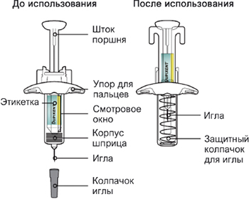 Данное устройство представляет собой предварительно заполненный одноразовый шприц с системой защиты (далее называется "шприц"). В нем содержится раствор для п/к введения, содержащий 300 мг препарата Дупиксент®. Важная информация
Как хранить шприц
Шаг 1. Извлечение шприца из упаковки Извлеките шприц из картонной упаковки, взяв его за середину корпуса. Не снимайте колпачок иглы до момента проведения инъекции. Нельзя использовать шприц, если он упал на твердую поверхность или поврежден. 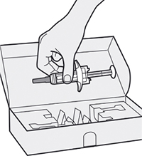 Шаг 2. Подготовка Убедитесь, что в наличии есть все необходимое для проведения инъекции:
* Не содержатся в картонной упаковке. Внимательно проверьте маркировку:
Нельзя использовать шприц после истечения срока годности, указанного на этикетке. 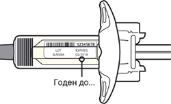 Шаг 3. Проверка Осмотрите раствор через смотровое окно на шприце: проверьте, является ли раствор прозрачным, является ли жидкость бесцветной или имеющей светло-желтый оттенок. Примечание: Вы можете обнаружить воздушные пузырьки, это нормально. Нельзя использовать шприц, если жидкость изменила цвет или помутнела, или если в ней есть заметные хлопья или частицы. 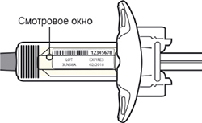 Шаг 4. Подождите 45 мин Положите шприц на плоскую поверхность не менее чем на 45 мин, пусть шприц нагреется до комнатной температуры. Не нагревайте шприц. Не подвергайте шприц прямому воздействию солнечных лучей. Шприц нельзя хранить при комнатной температуре более 14 дней. 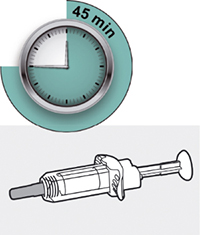 Шаг 5. Выбор места инъекции Выберите место инъекции
Инъекции препарата Дупиксент® не следует осуществлять на участках с болезненной или поврежденной кожей, кровоподтеками или рубцами. 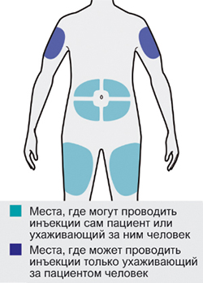 Шаг 6. Обработка места инъекции
Не дотрагивайтесь до обработанного участка кожи руками и не дуйте на него перед проведением инъекции. 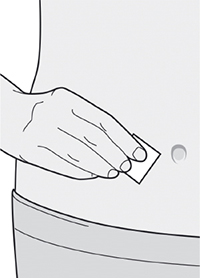 Шаг 7. Удаление колпачка иглы Держите шприц за середину корпуса, игла должна быть направлена в сторону от Вас; снимите колпачок с иглы. Не надевайте колпачок обратно на иглу. Не касайтесь иглы. Лекарственный препарат необходимо ввести сразу же после удаления колпачка иглы. 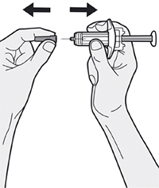 Шаг 8. Формирование складки кожи Сформируйте складку кожи в месте инъекции, как показано на рисунке. 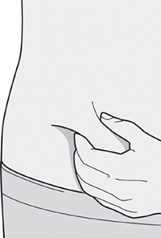 Шаг 9. Введение иглы Полностью введите иглу в сформированную складку кожи под углом приблизительно 45°. 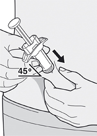 Шаг 10. Введение раствора Ослабьте сформированную складку кожи. Медленно и непрерывно нажимайте на шток поршня для введения всего раствора, пока шприц не опустеет. Примечание: Вы почувствуете некоторое сопротивление. Это нормально. 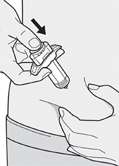 Шаг 11. Завершение инъекции и извлечение иглы Поднимите большой палец, снимая давление со штока поршня, игла будет втянута внутрь защитного колпачка для иглы; затем удалите шприц из места инъекции. Слегка прижмите ватный тампон или марлевую салфетку к месту инъекции, если заметите кровь. Не надевайте колпачок иглы снова на иглу. Не растирайте кожу после инъекции. 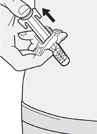 Шаг 12. Утилизация После использования следует поместить шприц и колпачок иглы в устойчивый к проколам контейнер. Не надевайте колпачок иглы снова на иглу. Храните контейнер в недоступном для детей месте. 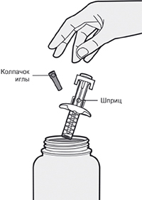 Инструкция по подготовке и проведению инъекции препарата Дупиксент® 300 мг в предварительно заполненном одноразовом шприце Перед началом применения препарата Дупиксент® в предварительно заполненном одноразовом шприце внимательно прочитайте эту инструкцию. Элементы предварительно заполненного шприца показаны на рисунке ниже: 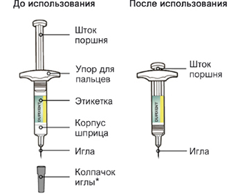 *Шприц может иметь твердый или мягкий колпачок иглы Данное устройство представляет собой предварительно заполненный одноразовый шприц (далее называется "шприц"). В нем содержится раствор для подкожного введения, содержащий 300 мг препарата Дупиксент®. Важная информация
Как хранить шприц
Шаг 1. Извлечение шприца из упаковки Извлеките шприц из картонной упаковки, взяв его за середину корпуса. Не снимайте колпачок иглы до момента проведения инъекции. Нельзя использовать шприц, если он был поврежден. 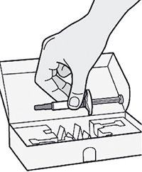 Шаг 2. Подготовка Убедитесь, что у Вас есть все необходимое для проведения инъекции:
* Не содержатся в картонной упаковке. Внимательно проверьте маркировку:
Нельзя использовать шприц после истечения срока годности, указанного на этикетке. 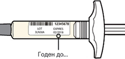 Шаг 3. Проверка Осмотрите раствор в шприце: проверьте, является ли раствор прозрачным, является ли жидкость бесцветной или имеющей светло-желтый оттенок. Примечание: Вы можете обнаружить воздушные пузырьки, это нормально. Нельзя использовать шприц, если жидкость изменила цвет или помутнела, или если в ней есть заметные хлопья или частицы. 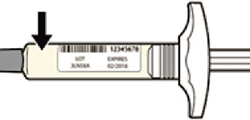 Шаг 4. Подождите 45 мин Положите шприц на плоскую поверхность не менее чем на 45 мин; пусть шприц нагреется до комнатной температуры. Не нагревайте шприц. Не подвергайте шприц прямому воздействию солнечных лучей. Шприц нельзя хранить при комнатной температуре более 14 дней. 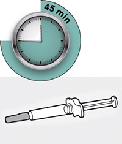 Шаг 5. Выбор места инъекции Выберите место инъекции.
Инъекции препарата Дупиксент® не следует осуществлять на участках с болезненной или поврежденной кожей, кровоподтеками или рубцами. Этап 6. Обработка участка инъекции
Шаг 7. Удаление колпачка иглы Держите шприц за середину корпуса, игла должна быть направлена в сторону от Вас; снимите колпачок иглы. Не надевайте колпачок иглы обратно на иглу. Не касайтесь иглы. Лекарственный препарат необходимо ввести сразу же после удаления колпачка иглы. 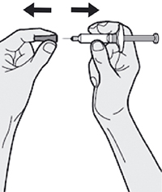 Шаг 8. Формирование складки кожи Сформируйте складку кожи на участке инъекции, как показано на рисунке. Шаг 9. Введение иглы Полностью введите иглу в сформированную складку под углом приблизительно 45°. 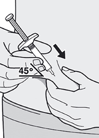 Шаг 10. Введение раствора Ослабьте сформированную складку кожи. Медленно и непрерывно нажимайте на шток поршня для введения всего раствора, пока шприц не опустеет. Примечание: Вы почувствуете некоторое сопротивление. Это нормально. 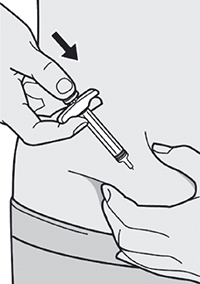 Шаг 11. Извлечение иглы Извлеките иглу из кожи под тем же углом, под которым она была введена. Не надевайте колпачок иглы снова на иглу. Слегка прижмите ватный тампон или марлевую салфетку к месту инъекции, если Вы заметите кровь. Не растирайте кожу после инъекции. 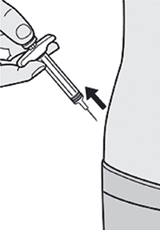 Шаг 12. Утилизация После использования следует поместить шприц и колпачок иглы в устойчивый к проколам контейнер. Не надевайте колпачок иглы снова на иглу. Храните контейнер в недоступном для детей месте. 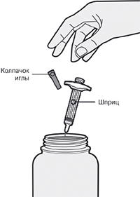 Инструкция по подготовке и проведению инъекции препарата Дупиксент® 200 мг в предварительно заполненном одноразовом шприце с системой защиты Перед началом применения препарата Дупиксент® в предварительно заполненном одноразовом шприце с системой защиты внимательно прочитайте эту инструкцию. Элементы предварительно заполненного одноразового шприца с системой защиты показаны на рисунке ниже: 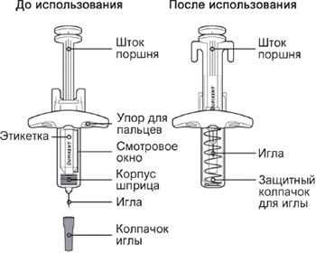 Данное устройство представляет собой предварительно заполненный одноразовый шприц с системой защиты (далее называется "шприц"). В нем содержится раствор для подкожного введения, содержащий 200 мг препарата Дупиксент®. Важная информация
Как хранить шприц
Шаг 1. Извлечение шприца из упаковки Извлеките шприц из картонной упаковки, взяв его за середину корпуса. Не снимайте колпачок иглы до момента проведения инъекции. Нельзя использовать шприц, если он упал на твердую поверхность или поврежден. 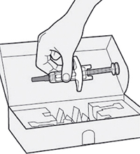 Шаг 2. Подготовка Убедитесь, что у Вас есть все необходимое для проведения инъекции:
* Не содержатся в картонной упаковке. Внимательно проверьте маркировку:
Нельзя использовать шприц после истечения срока годности, указанного на этикетке. 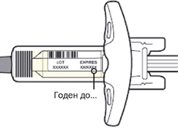 Шаг 3. Проверка Осмотрите раствор через смотровое окно на шприце: проверьте, является ли раствор прозрачным, является ли жидкость бесцветной или имеющей светло-желтый оттенок. Примечание: Вы можете обнаружить воздушные пузырьки, это нормально. Нельзя использовать шприц, если жидкость изменила цвет или помутнела, или если в ней есть заметные хлопья или частицы. 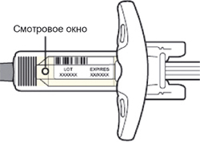 Шаг 4. Подождите 30 мин Положите шприц на плоскую поверхность не менее чем на 30 мин; пусть шприц нагреется до комнатной температуры. Не нагревайте шприц. Не подвергайте шприц прямому воздействию солнечных лучей. Шприц нельзя хранить при комнатной температуре более 14 дней. 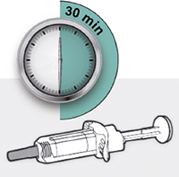 Шаг 5. Выбор места инъекции Выберите место инъекции.
Инъекции препарата Дупиксент® не следует осуществлять на участках с болезненной или поврежденной кожей, кровоподтеками или рубцами. Шаг 6. Обработка места инъекции
Шаг 7. Удаление колпачка иглы Держите шприц за середину корпуса, игла должна быть направлена в сторону от Вас; снимите колпачок с иглы. Не надевайте колпачок обратно на иглу. Не касайтесь иглы. Лекарственный препарат необходимо ввести сразу же после удаления колпачка иглы. 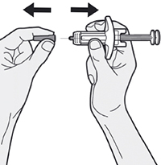 Шаг 8. Формирование складки кожи Сформируйте складку кожи в месте инъекции, как показано на рисунке. Шаг 9. Введение иглы Полностью введите иглу в сформированную складку кожи под углом приблизительно 45°. 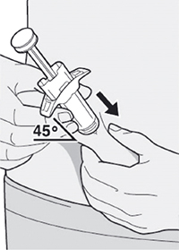 Шаг 10. Введение раствора Ослабьте сформированную складку кожи. Медленно и непрерывно нажимайте на шток поршня для введения всего раствора, пока шприц не опустеет. Примечание: Вы почувствуете некоторое сопротивление. Это нормально. 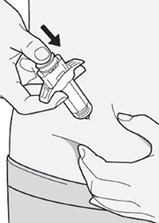 Шаг 11. Завершение инъекции и извлечение иглы Поднимите большой палец, снимая давление со штока поршня, игла будет втянута внутрь защитного колпачка для иглы, а затем удалите шприц из места инъекции. Слегка прижмите ватный тампон или марлевую салфетку к месту инъекции, если Вы заметите кровь. Не надевайте колпачок иглы снова на иглу. Не растирайте кожу после инъекции. 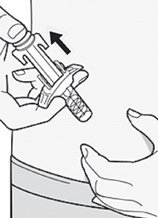 Шаг 12. Утилизация После использования следует поместить шприц и колпачок иглы в устойчивый к проколам контейнер. Не надевайте колпачок иглы снова на иглу. Храните контейнер в недоступном для детей месте. Побочное действие
Атопический дерматит Для описания частоты встречаемости нежелательных реакций используется следующая классификация: очень часто (≥10%); часто (≥1% и <10%); нечасто (≥0.1% и <1%); редко (≥0.01% и <0.1%); очень редко (<0.01%); частота неизвестна (невозможно определить по имеющимся данным частоту встречаемости нежелательной реакции). Таблица 1. Нежелательные реакции, наблюдавшиеся в клинических исследованиях у пациентов с атопическим дерматитомa
* Пострегистрационные данные. a Объединенные данные плацебо-контролируемых клинических исследований с проведением монотерапии (SOLO1, SOLO2 и исследования по подбору доз 2 фазы) и плацебо-контролируемого исследования CHRONOS с одновременным применением топических ГКС для лечения атопического дерматита; пациенты получали препарат в дозе 300 мг 1 раз в 2 недели и 300 мг 1 раз в неделю с или без топических ГКС в течение 16 недель. b В клинических исследованиях случаи с герпетическими инфекциями (Herpes simplex) проявлялись поражениями кожи и слизистых оболочек, обычно были легкой или средней степени тяжести и не включали герпетическую экзему. О случаях герпетической экземы сообщалось отдельно, частота таких случаев была ниже у пациентов, получавших препарат Дупиксент®, по сравнению с группой плацебо. Подростки в возрасте от 12 до 17 лет Безопасность применения препарата Дупиксент® была оценена в исследовании с 250 пациентами в возрасте от 12 до 17 лет с атопическим дерматитом среднетяжелого и тяжелого течения (AD-1526). Профиль безопасности в течение 16 недель был сопоставим с профилем безопасности взрослых пациентов, принимавших участие в исследованиях. Безопасность при длительном применении препарата Дупиксент® была оценена в долгосрочном открытом продолженном исследовании с участием пациентов в возрасте 12-17 лет с атопическим дерматитом среднетяжелого и тяжелого течения (AD-1434). Профиль безопасности в течение 52 недель был сравним с профилем безопасности пациентов, принимавших участие в 16-недельном исследовании (AD-1526). Профиль безопасности при длительном применении препарата Дупиксент® подростками соответствовал таковому у взрослых пациентов. Профиль безопасности комбинированного лечения препаратом Дупиксент® в сочетании с топическими ГКС в течение 52 недель соответствует профилю его безопасности, наблюдавшемуся к 16-й неделе. Дети в возрасте от 6 до 11 лет Безопасность препарата Дупиксент® изучали в исследовании при участии 367 пациентов в возрасте от 6 до 11 лет с тяжелым атопическим дерматитом (AD-1652). Профиль безопасности препарата Дупиксент® в сочетании с топическими ГКС у этих пациентов, наблюдение за которыми вели до 16 недели включительно, оказался сопоставимым с профилем безопасности препарата в исследованиях с участием взрослых пациентов и подростков с атопическим дерматитом. Долгосрочная безопасность препарата Дупиксент® в сочетании с топическими ГКС оценивали в открытом продолженном исследовании у 368 пациентов в возрасте от 6 до 11 лет с атопическим дерматитом (AD-1434). На момент включения в исследование AD-1434 у 110 (29.9%) пациентов был среднетяжелый атопический дерматит, а у 72 (19.6%) пациентов был тяжелый атопический дерматит. Профиль безопасности препарата Дупиксент® в сочетании с топическими ГКС у пациентов, наблюдение за которыми вели в течение 52 недель, был схожим с профилем безопасности, установленным на 16 неделе в исследовании AD-1652. Долгосрочный профиль безопасности препарата Дупиксент® в сочетании с топическими ГКС у детей был сопоставим с таковым у взрослых пациентов и подростков с атопическим дерматитом. Бронхиальная астма Таблица 2. Нежелательные реакции, наблюдавшиеся в клинических исследованиях у пациентов с бронхиальной астмой
* Пострегистрационные данные. Долгосрочную безопасность препарата Дупиксент® оценивали в открытом продленном исследовании с участием 2282 пациентов в возрасте от 12 лет и старше со среднетяжелой и тяжелой бронхиальной астмой (TRAVERSE). В этом исследовании наблюдение продолжалось в течение 96 недель, что составило 3169 пациенто-лет кумулятивного воздействия препарата Дупиксент®. Профиль безопасности препарата Дупиксент® в исследовании TRAVERSE соответствовал профилю безопасности, зарегистрированному в базовых исследованиях по лечению астмы в течение 52 недель. Не было выявлено дополнительных нежелательных реакций. Хронический полипозный риносинусит Таблица 3. Нежелательные реакции, наблюдавшиеся в клинических исследованиях у пациентов с хроническим полипозным риносинуситом
* Пострегистрационные данные. Описание отдельных нежелательных реакций Явления, связанные с конъюнктивитом и кератитом Конъюнктивит и кератит чаще всего наблюдались у пациентов с атопическим дерматитом, получавших препарат Дупиксент®. У большинства пациентов конъюнктивит или кератит разрешался полностью или частично в течение периода лечения. Среди пациентов с астмой частота конъюнктивита и кератита была низкой и сходной между группами, получавшим препарат Дупиксент® и плацебо. У пациентов с хроническим полипозным риносинуситом частота конъюнктивита была низкой, хотя частота в группе, получавших препарат Дупиксент® была выше, чем в группе плацебо. В программе клинических исследований у пациентов с хроническим полипозным риносинуситом не было зарегистрировано ни одного случая кератита (см. раздел "Особые указания"). Герпетическая экзема и Herpes zoster В клинических исследованиях у пациентов с атопическим дерматитом частота герпетической экземы была схожей в группах, получающих препарат Дупиксент® и в группе плацебо. По данным 16-недельных исследований монотерапии Herpes zoster был зарегистрирован в <0.1% случаев в группе, получающей Дупиксент® (<1 на 100 пациенто-лет) и <1% в группе плацебо (1 на 100 пациенто-лет). В 52-недельном клиническом исследовании с одновременным применением топических ГКС (CHRONOS) Herpes zoster был зарегистрирован в 1% случаев в группе, получающей Дупиксент® + топические ГКС (1 на 100 пациенто-лет) и в 2% в группе плацебо (2 на 100 пациенто-лет). В клинических исследованиях у пациентов с бронхиальной астмой частота Herpes zoster была схожей в группах, получающих препарат Дупиксент® или плацебо. Гиперчувствительность Сообщалось о реакциях гиперчувствительности, включая анафилаксию и сывороточную болезнь или реакциях, подобных сывороточной болезни (см. разделы "Противопоказания" и "Особые указания"). Эозинофилы У пациентов, получавших препарат Дупиксент®, наблюдалось более высокое среднее начальное увеличение от исходного уровня эозинофилов по сравнению с пациентами, получавшими плацебо. Количество эозинофилов снижалось почти до базовых уровней во время исследования. В рамках открытого продленного исследования у пациентов с бронхиальной астмой количество эозинофилов продолжало снижаться ниже исходного уровня. Частота эозинофилии, вызванной лечением (≥500 клеток/мкл), была сходной в группах пациентов, получавших препарат Дупиксент® и плацебо. Эозинофилия, вызванная лечением (≥5000 клеток/мкл), была зарегистрирована менее чем у 2% пациентов, получавших препарат Дупиксент®, и менее чем у 0.5% пациентов, получавших плацебо. Инфекции Количество серьезных инфекций у пациентов с атопическим дерматитом, бронхиальной астмой и хроническим полипозным риносинуситом было сопоставимо у пациентов, принимавших Дупиксент® и плацебо. В первичных исследованиях безопасности клинических исследованиях пациентов с атопическим дерматитом не наблюдалось увеличения общей частоты инфекций или серьезных инфекций во время лечения препаратом Дупиксент® по сравнению с плацебо. В 16-недельных первичных клинических исследованиях безопасности, в которых проводилась монотерапия препаратом Дупиксент®, были зарегистрированы серьезные инфекции у 0.5% пациентов, получавших дупилумаб и у 1.0% пациентов, получавших плацебо. В 52-недельном исследовании CHRONOS серьезные инфекции были зарегистрированы у 0.2% пациентов, получавших препарат Дупиксент® и у 0.6% пациентов, получавших плацебо. В клинических исследованиях у пациентов с бронхиальной астмой не наблюдалось увеличения общей частоты инфекций или серьезных инфекций во время лечения препаратом Дупиксент® по сравнению с плацебо. В 24-недельном клиническом исследовании были зарегистрированы серьезные инфекции у 1.0% пациентов, получавших дупилумаб, и у 1.1% пациентов, получавших плацебо. В 52-недельном исследовании QUEST серьезные инфекции были зарегистрированы у 1.3% пациентов, получавших дупилумаб, и у 1.4% пациентов, получавших плацебо. В клинических исследованиях у пациентов с хроническим полипозным риносинуситом не наблюдалось увеличения общей частоты инфекций. В 24-недельном клиническом исследовании серьезные инфекции были зарегистрированы у 0.7% пациентов, получавших Дупиксент® и у 1.1% пациентов, получавших плацебо. В ходе исследования SINUS-52 продолжительностью 52 недели инфекции были зарегистрированы у 1.3% пациентов, получавших дупилумаб, и у 1.3% пациентов, получавших плацебо. Сердечно-сосудистые события В 1-летнем плацебо-контролируемом исследовании у пациентов с бронхиальной астмой (QUEST) сердечно-сосудистые тромбоэмболические события (сердечно-сосудистые смерти, нефатальные инфаркты миокарда и нефатальные инсульты) были зарегистрированы в 1 случае (0.2%) в группе пациентов, получавших Дупиксент® 200 мг 1 раз в 2 недели; в 4 случаях (0.6%) в группе пациентов, получавших Дупиксент® 300 мг 1 раз в 2 недели и в 2 случаях (0.3%) в группе плацебо. В 1-летнем плацебо-контролируемом исследовании у пациентов с атопическим дерматитом (CHRONOS) сердечно-сосудистые тромбоэмболические события (сердечно-сосудистые смерти, нефатальные инфаркты миокарда и нефатальные инсульты) были зарегистрированы в 1 случае (0.9%) в группе пациентов, получавших Дупиксент® 300 мг 1 раз в 2 недели + топические ГКС; в 0 случаев (0.0%) в группе пациентов, получавших Дупиксент® 300 мг 1 раз в неделю + топические ГКС и в 1 случае (0.3%) в группе плацебо + топические ГКС. Иммуногенность Как и все белковые лекарственные препараты, препарат Дупиксент® обладает потенциалом иммуногенности. Примерно у 5% пациентов с атопическим дерматитом, бронхиальной астмой или хроническим полипозным риносинуситом, которые получали препарат Дупиксент® в дозе 300 мг 1 раз в 2 недели в течение 52 недель, отмечалось образование антител против дупилумаба (АТ); приблизительно у 2% пациентов АТ стойко сохранялись и приблизительно 2% имели нейтрализующие антитела. Аналогичные результаты наблюдались у пациентов детского возраста (от 6 до 11 лет) с атопическим дерматитом, которые получали препарат Дупиксент® в дозе 200 мг 1 раз в 2 недели или 300 мг 1 раз в 4 недели в течение 16 недель. Приблизительно у 16% подростков с атопическим дерматитом, получавших препарат Дупиксент® в дозе 300 мг или 200 мг 1 раз в 2 недели в течение 16 недель, отмечалось образование антител к дупилумабу; приблизительно у 3% зарегистрирован стойкий ответ со стороны АТ, и приблизительно у 5% пациентов были выявлены нейтрализующие антитела. Примерно у 9% пациентов с бронхиальной астмой, которые получали препарат Дупиксент® в дозе 200 мг 1 раз в 2 недели в течение 52 недель, отмечалось образование антител к дупилумабу; приблизительно у 4% АТ стойко сохранялись и приблизительно 4% имели нейтрализующие антитела. Независимо от возраста и популяции примерно у 2-4% пациентов в группах плацебо в 52-недельных исследованиях имелись антитела к дупилумабу; приблизительно у 2% антитела устойчиво сохранялись и приблизительно 1% имел нейтрализующие антитела. Реакция образования антител обычно не влияла на системную экспозицию, безопасность или эффективность препарата Дупиксент®. Менее чем у 1% пациентов, получавших препарат Дупиксент® в зарегистрированной дозе, были выявлены высокие титры антител к препарату, ассоциирующиеся со снижением его системной экспозиции и эффективности. Кроме того, у одного пациента была обнаружена сывороточная болезнь, а у другого реакция, подобная сывороточной болезни (<0.1%), ассоциировавшиеся с высокими титрами антител (см. раздел "Особые указания"). Наблюдаемая частота стойкого сохранения АТ и нейтрализующей активности в значительной степени зависят от чувствительности и специфичности используемого аналитического метода. Кроме того, наблюдаемая частота АТ-положительного статуса в анализе может зависеть от нескольких факторов, в т.ч. методики анализа, способа обработки проб, времени сбора проб, сопутствующих препаратов, а также статуса основного заболевания в каждом отдельном случае. По этим причинам сравнение частоты образования антител к дупилумабу с частотой выработки антител к другим препаратам может ввести в заблуждение. Противопоказания
С осторожностью При беременности (только если ожидаемая польза превышает потенциальный риск для плода). Применение при беременности и кормлении грудью
Беременность Имеются лишь ограниченные данные по применению дупилумаба у беременных женщин. В исследованиях, проведенных на животных, прямых и косвенных неблагоприятных эффектов в отношении репродуктивной токсичности не обнаружено. Препарат Дупиксент® можно применять во время беременности только в том случае, если ожидаемая польза для матери превышает потенциальный риск для плода. Период грудного вскармливания Неизвестно, экскретируется ли дупилумаб с грудным молоком человека. С учетом пользы грудного вскармливания для ребенка и преимущества дальнейшего применения препарата для матери следует принять решение о прекращении кормления грудью или отмене препарата Дупиксент® в течение периода грудного вскармливания. Особые указания
Гиперчувствительность При возникновении системной реакции гиперчувствительности лечение препаратом Дупиксент® должно быть немедленно прекращено, и начата соответствующая терапия. В клинических исследованиях при применении препарата Дупиксент® при атопическом дерматите сообщалось об одном случае развития реакции, подобной сывороточной болезни, и одном случае развития сывороточной болезни после введения препарата (обе нежелательные реакции расценивались как серьезные). В исследовании при применении препарата при бронхиальной астме сообщалось об одном случае развития анафилаксии после введения препарата Дупиксент® (см. раздел "Побочное действие"). Конъюнктивит и явления, связанные с кератитом Конъюнктивит и явления, связанные кератитом, чаще встречались у пациентов с атопическим дерматитом, получавших препарат Дупиксент®. У некоторых пациентов наблюдалось нарушение зрения (например, затуманенное зрение), связанное с конъюнктивитом или кератитом (см. раздел "Побочное действие"). Пациенты должны сообщать о первом появлении или ухудшении симптомов со стороны глаз своему лечащему врачу. Пациенты, получающие лечение препаратом Дупиксент®, у которых развивался конъюнктивит, не проходящий после стандартного лечения, или признаки и симптомы кератита, должны пройти соответствующее офтальмологическое обследование (см. раздел "Побочное действие"). Эозинофильные состояния У пациентов с бронхиальной астмой может развиться серьезная системная эозинофилия, иногда в виде клинических признаков эозинофильной пневмонии или васкулита, соответствующих эозинофильному гранулематозу с полиангиитом, которые часто лечатся системными кортикостероидами. Эти события, как правило, но не всегда, могут быть связаны с сокращением приема пероральных кортикостероидов. Врачи должны быть внимательны к васкулитной сыпи, ухудшающимся легочным симптомам, сердечным осложнениям и/или нейропатии, возникающим у их пациентов с эозинофилией. Сообщалось о случаях эозинофильной пневмонии и васкулита, соответствующих эозинофильному гранулематозу с полиангиитом, при применении препарата Дупиксент® у взрослых пациентов, которые участвовали в клиническом исследовании препарата при бронхиальной астме. Связь между применением препарата Дупиксент® и этими состояниями не была установлена. Симптомы обострения бронхиальной астмы или ухудшающееся состояние Препарат Дупиксент® не следует назначать для лечения симптомов остро возникшего ухудшения или обострений астмы. Препарат Дупиксент® не применяется для лечения острого бронхоспазма или астматического статуса. Снижение дозы ГКС Не следует резко прерывать применение системных, местных или ингаляционных ГКС после начала терапии препаратом Дупиксент®. Сокращение дозы ГКС, при необходимости, должно быть постепенным и должно выполняться под непосредственным наблюдением врача. Уменьшение дозы ГКС может сопровождаться системными симптомами отмены и/или манифестацией состояний, которые ранее не проявлялись из-за системной терапии ГКС. Гельминтозы (глистные инвазии) Пациенты с обнаруженным гельминтозом не включались в клинические исследования. Неизвестно, может ли препарат Дупиксент® повлиять на иммунный ответ при гельминтозах. Необходимо провести лечение пациентов с имеющимся гельминтозом перед тем, как начинать лечение препаратом Дупиксент®. Если во время лечения препаратом Дупиксент® пациент заражается гельминтозом, а антигельминтные препараты оказываются неэффективными, следует прекратить лечение препаратом Дупиксент® до излечения паразитарного заболевания. Сопутствующие атопические заболевания Пациентам с атопическим дерматитом или ХПРС и с сопутствующей бронхиальной астмой следует рекомендовать не изменять своего лечения, не проконсультировавшись с лечащим врачом. Прекращая лечение препаратом Дупиксент®, следует принимать во внимание возможные эффекты на течение других атопических заболеваний. Влияние на способность к управлению транспортными средствами и механизмами Препарат Дупиксент® не оказывает или оказывает незначительное влияние на способность управлять транспортными средствами и работать с другими механизмами. Передозировка
В клинических исследованиях не было выявлено проблем, связанных с безопасностью, при однократном в/в введении в дозах до 12 мг/кг. Лечение: специфического антидота при передозировке препаратом Дупиксент® не существует. В случае передозировки необходимо контролировать состояние пациента для своевременного выявления признаков и симптомов нежелательных явлений и незамедлительно назначать соответствующее симптоматическое лечение. Лекарственное взаимодействие
Живые вакцины Применение препарата Дупиксент® с живыми вакцинами не изучалось. Во время лечения препаратом Дупиксент® не следует проводить вакцинацию живыми вакцинами. Неживые (инактивированные) вакцины Иммунные реакции на вакцинацию изучались в исследовании, в котором пациенты с атопическим дерматитом получали еженедельно препарат Дупиксент® в дозе 300 мг в течение 16 недель. После 12 недель терапии дупилумабом пациентов вакцинировали вакциной Tdap (Т-клеточно-зависимая, Adacel®) и менингококковой полисахаридной вакциной (Т-клеточно-независимая, Menomune®) и оценивали иммунные реакции по истечении 4 недель. У пациентов, получавших как дупилумаб, так и плацебо, реакции с образованием антител к противостолбнячной и менингококковой полисахаридной вакцинам были сходными. В этом исследовании не было обнаружено нежелательных взаимодействий между любой из этих неживых вакцин и дупилумабом. Взаимодействие с субстратами изоферментов CYP450 В клиническом исследовании, проведенном у пациентов с атопическим дерматитом, оценивались эффекты дупилумаба на фармакокинетику субстратов изоферментов CYP. Данные, полученные в этом исследовании, не указывают на клинически значимое влияние дупилумаба на активность изоферментов CYP1A2, CYP3A, CYP2C19, CYP2D6 или CYP2C9. Взаимодействие с другими лекарственными средствами для лечения бронхиальной астмы Влияние дупилумаба на фармакокинетику одновременно назначаемых препаратов не ожидается. Данные, полученные на основании популяционного анализа, не указывают на влияние одновременно назначаемых препаратов на фармакокинетику дупилумаба у пациентов со среднетяжелым или тяжелым течением бронхиальной астмы. |
||||||||||||||||||||||||||||||||||||||||||||||||||||||||||||||||||||||||||||||||||||||||||||||||||
Вернуться наверх |
||||||||||||||||||||||||||||||||||||||||||||||||||||||||||||||||||||||||||||||||||||||||||||||||||
Copyright © Справочник Видаль «Лекарственные препараты в России», Москва, Россия